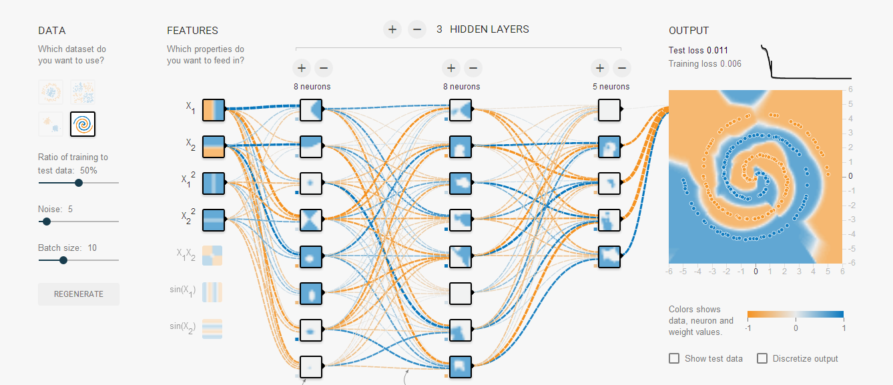

Tensorflow Playground 初体验
Tensorflow Playground是Google开源的一个神经网络深度学习展示demo，以图形化形式展示，可以直观地理解神经网络的工作原理。
本地部署
同样也可以将其git到本地部署，便于无网络环境下研究。
其采用node.js开发，nn.ts即是简化的nn库。
1、在控制台执行：
则在当前目录下，生成node_modules/deep-playground-prototype.
其主目录位于deep-playground-prototype下的dist目录，将web server主目录设为此即可。
2、启动npm run server，提示缺乏http-server，因http-server依赖jitsu，则首先安装jitsu。
执行：
则在deep-playground-prototype目录下，生成http-server目录，web server文件为其下的bin/http-server，执行：
则可在http://localhost:8080 访问。
实际上，支持页面展示，dist目录下的index.html直接拖入浏览器即可
功能
其支持不同激活函数的设置：ReLU、tanh、sigmoid、linear。
提供了分类的4个数据集，对于典型的双螺旋结构来说，linear无法正确分类。
隐藏层通常可设置为2-3层，每层神经元最多可为8个，输入特征在3个以上时，都能够很快收敛，test loss在1%以下。
